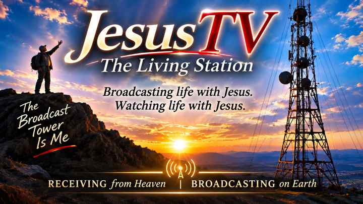

The Receiving Station
Prayer, scripture, attention, sacred imagination, memories, and the quiet work of listening.

Jesus-Greg WORLD · Inheritance #2
The Living Station
Broadcasting life with Jesus.
Watching life with Jesus.
Our studios are everywhere. Our subject is Jesus Christ. Our story is already underway.
The founding idea
A six-foot-four human broadcast tower: a body that receives, responds, remembers, and broadcasts.
Raise an arm toward heaven: an antenna reaching, a mast holding a sail, a reminder of being moved upon. Lower the arm—and go live in the ordinary world. The metaphor travels wherever Greg goes: the porch, the car, Walmart, the kitchen, and beyond.
Prayer, scripture, attention, sacred imagination, memories, and the quiet work of listening.
Talking, singing, storytelling, testimony, conversations, and recorded broadcasts.
Watching life with Jesus, including our own actions and the reactions of others. The broadcaster is also a viewer.
A station with many studios
Some programs are recorded. Some happen in person. Others are scenes of sacred imagination. This is a developing program guide, not a claim that each show has published episodes.
From the car: reflections, Facebook Live, songs, and dispatches from the road.
Conversations, observations, remembering, and spontaneous broadcasting.
At Walmart, church, and in the community: ordinary encounters become part of the story.
The raised arm, the antenna, the sail, and the daily practice of receiving and being moved.
Hymns, redeemed songs, favorite times on Earth, and stories worth revisiting.
The kitchen is a studio too. Visit the restaurant.
Past · Present · Future
Redeem memories. Revisit old scenes with new eyes.
Live the broadcast. Notice, receive, speak, sing, and serve.
Rehearse hope. Make room for another story to begin.
“We talk of Christ, we rejoice in Christ, we preach of Christ, we prophesy of Christ.”— 2 Nephi 25:26
Jesus TV is both a station where Greg broadcasts about Jesus and a station where Greg and Jesus watch life together. Jesus is real to Greg—and also the companion of his sacred imagination. The station is a creative, devotional way of seeing ordinary life.
Sometimes the cameras are on. Sometimes they're off. The story continues.
Christmas box #2
Jesus Mountain Restaurant is inheritance #1. Jesus TV is inheritance #2. Both begin in ordinary practices already underway and grow into visible, shareable expressions of Jesus-Greg WORLD.
Visit the 100 Inheritances gallery